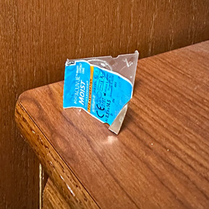
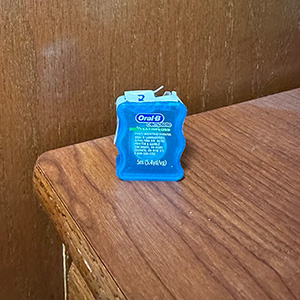
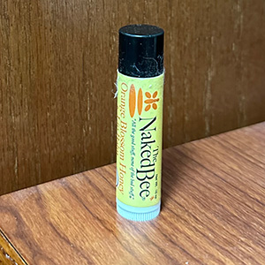
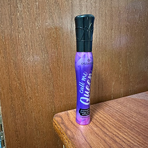
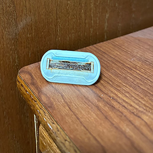
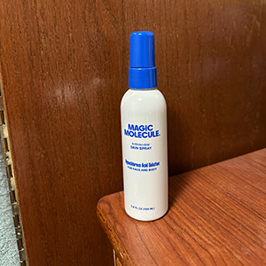
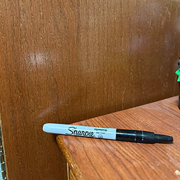
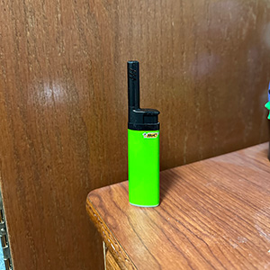
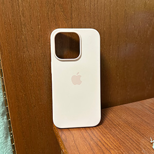

On average, a person generates 5lbs of waste per day (EPA). While that doesn’t sound like a significant amount, it adds up over time and contributes to large landfills full of “forever” garbage. You might ask yourself “who cares?”, but this is a major problem for the environment and our futures.
This is what drove me to start my project, “Back to your Roots”. The hope behind this project is to raise awareness towards how wasteful we are as humans and to highlight the importance of looking at alternative methods of waste management.
The name is meant to have two meanings. The first being to go back and reflect on when you acquired the item, what it was used for, and why and how you are getting rid of it. The second being the idea of the trash going back to the Earth.
I have been deeply inspired by a few prominent people in the “trash” field. The first is Sarah Newman, who argues that the idea of “trash” is a relatively new idea. Past societies made use of any “waste” citing examples of using latrine waste as fertilizer.
Similarly, Vik Muniz takes waste from landfills and arranges them into large scale portraits to shift the way that people see art and garbage. He has even recruited some garbage disposal workers in making his art.
I also was inspired by Claudia von Mallinckrodt who goes around rich neighborhoods and salvages valuable items that were quickly discarded. These three people have worked hard to change the narrative about trash. I hope to be able to do the same. Read More
This week’s trash had a pattern that I picked up on. For example, of the nine objects I documented this week, six of them were related to beauty/personal hygiene. These objects included a mascara bottle, an old razor, an old chapstick, a face spray, an old contact container, and a thing of floss.
This really sheds light on products that I use a lot and the emphasis that I place in my life on taking care of myself. I also noticed that eight out of the nine objects were items that I had used up/had gone bad. This signaled to me that I am doing a good job of not throwing away items just for the sake of it. Rather, I am using the items up to their potential. I decided to divide the items for this week into three categories: eyes & mouth, skin goals, and not pretty, just necessary.
This first grouping of items involves items that hold things that go in or on the eyes and mouth. These objects involve the contact blister packet, the floss container, the chapstick, and the mascara bottle. The contact blister packet is a small, light blue container that has my contact prescription information on it. I received this item a few months ago along with a full year’s worth supply. One memorable experience I had with this item was when I went to put in my new contact, not realizing that I hadn’t taken out my old one. The reason I am discarding this item is because I used the contact inside of it and no longer need the packaging.
The second item is the floss container which I got from the dentist when I went for my bi-annual checkup in September and is a small, blue box. I remember one time I used floss in place of thread since I didn’t have anything to tie something together. I am throwing out the container because much like the contact blister packet, I have used all the floss inside and no longer need the container. The chapstick has a black top and a yellow bottom with the brand “The Naked Bee” on it. I got the chapstick a few years ago as a stocking stuffer and it has served me well until it ran out recently. A funny memory I have was when I got sick with a sinus infection, I kept putting it all around my lips and under my nose because it helped clear my sinuses. I am getting rid of it since it has reached its end.
The last item in this group is the mascara bottle. It is a purple bottle with a black top. The mascara itself is the deepest shade of black. I bought it a few months ago in a desperate search for a good mascara. It has since grown old and got clumpy which is why I am throwing it away. However, while it was still good, I still remember all the compliments I got on my lashes.
The second group of items contains items that I use on my skin. These are the razor head and the “Magic Molecule” skin spray. The razor head is a white plastic piece that goes on the end or a razor handle, and it has a few metal bars which are what cuts the hair. I got it a few weeks ago and funnily enough, I remember placing it down in the shower one time and I couldn’t find it for the life of me only to realize that I had put it in one of my exfoliating gloves. I am getting rid of the head because it has gotten rusty from being exposed to the water for so long and I don’t want to risk tetanus.
The second item is the “Magic Molecule” spray which I got a few months ago since it is known for helping with red skin, itchy skin, or really any issues with your skin. It is a white bottle with a blue cap. I remember I had a bad pimple, and it cleared up overnight from using the spray. I am getting rid of the bottle since it is now empty having saved my skin.
The last group of items are what I deem “Not Pretty, Just Necessary" meaning they don’t help me look or feel better but are essential. These include the Sharpie, the lighter lighter, and the phone case. The Sharpie was part of my back-to-school shopping spree when I started college four years ago and has a black click top and a gray body. It has helped me with a lot of different projects and for organizing my notes. One time, I spent 2 hours highlighting information in Sharpie, and the marker didn't falter at all. I am getting rid of it since it is now worn out and dry.
The lighter I got about a year ago has a black top with a lime green body. It has lit a lot of candles that help make my room the perfect study haven. My favorite scent is "Pink Sands", and the lighter has lit that candle every time. Unfortunately, it has been all used up and will not light anymore. The last item is the phone case which is light pink and silicone for an iPhone 14 Pro. I got it a few months ago and one funny memory I have is going through TSA and it got stuck in my pocket as I scrambled to get it out embarrassed. It is for that exact reason (impossible to get out of your pocket), that I am getting rid of it.

Opened blue contact blister packet discarded on its side

Lone blue floss container staining upright

Singular chapstick with black cap and yellow body standing upright

Used up bottle of mascara with black cap and purple body

Rusty razor head tilted upwards

Finished blue cap and white body face spray

Click one sharpie laying on its side

Lime green lighter with black top standing upright

Baby pink silicone phone case propped upright
| Item | Weight | Source | Location | Cost | Owned | Mode | Function |
|---|---|---|---|---|---|---|---|
| Contact Blister Packet | 1g | Eye dr | $$ | 1 year | Health | ||
| Floss Container | 6g | Dentist | $ | 4 months | Health | ||
| Chapstick | 6g | Relative | $ | 3 years | Grooming | ||
| Mascara Bottle | 12g | Target | $ | 2 months | Cosmetic | ||
| Razor Head | 5g | Costco | $ | 1 month | Grooming | ||
| Skin Spray | 60g | Target | $$ | 1 month | Grooming | ||
| Sharpie | 15g | Staples | $ | 4 years | Utility | ||
| Lighter | 25g | Target | $ | 1 year | Utility | ||
| Phone Case | 30g | Amazon | $ | 3 months | Cosmetic |
Thank you for tuning into this week's "Back to your Roots" where I look back at the trash I have collected from the past week. This week I learned a lot about my prioritization on health and beauty. I am saying goodbye to my red skin and clumpy eyelashes along with my finished face spray and mascara. It is time for a fresh start to the week as well as fresh beauty products.
Thank you all for joining in to learn more about me and my trash habits. I can’t wait to see what other patterns I will find next week. Feel free to check out my past week's submissions here as well. Stay tuned to see what is in store and don't be afraid to go back to your roots and find where your trash habits lead you.